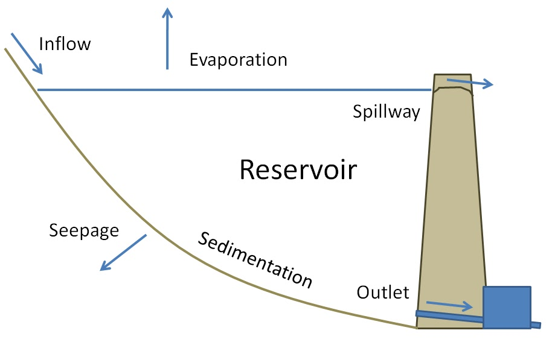

2/6/2019 Notes¶
Talking about last lecture. About how stationarity, or nonstationarity, make prediction of future flood probabilities difficult.
Humans are to blame for it, both through climate change and landuse changes. Makes stationarity dead.
Today we are going to talk about reservoirs.
Reservoirs; Definition¶
Definition: engineering structures that store water.
- Use cases:
- Municipal Water Supply Reservoirs
- Irrigation Reservoirs
- Flood Control Reservoirs
- Hydropower
- Recreation
- Types:
- Storage Reservoirs (ex: Big Dam)
- Inflow uncontrolled
- Outflow controlled
- Distribution Reservoirs (ex: Water Tank)
- Inflow controlled
- Outflow uncontrolled
Water Balance¶
Control Volume, S, is the storage in the reservoir
Inflows:
- Precipitation, \(P\)
- Groundwater Inflow, \(G_i\)
- Surface Inflow, \(Q_i\)
Outflows:
- Evaporation, \(E\)
- Groundwater Outflow (Seepage), \(G_o\)
- Diversions, \(D\)
- Outflows, \(Q_{o}\)
So,
\(\Delta S = (P - E) + (Q_i - Q_o) + (G_i - G_o) - D\)
Simplification For A Flood Control Reservoir
\(\Delta S \approx Q_i - Q_o\)
\(\Delta t \sim [minutes-to-hours-to-days?]\)
Can ignore everything else, though may need to pay attention to the precipitation falling on the reservoir area IF the surface area is a significant percentage of the basin.
Can integrate over the \(\Delta S(t)\) hydrograph to determine a volume measure.
Simplification For an Irrigation
Calculate the “net inflow”, \(Q_{in,net}\)
\(\Delta S = Q_i + P - E + (G_i - G_o) - Q_o - D\)
Looking at the example of Coralville Reservoir for flood control operation. Showing us a Storage-Elevation Curve